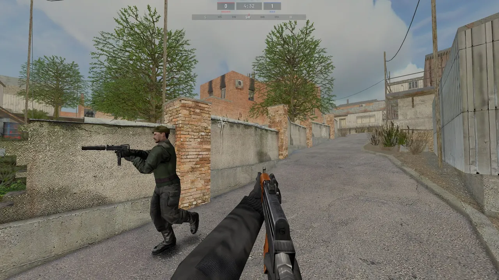

Inside 0.36.0, the update you can hear
Voice chat, team pings, bots that read the map, a full audio overhaul and an optional 128 updates per second. This is the long version: what changed, why we built it the way we did, how it was tested, and what is still to come.
Version 0.36.0 is out, one day after 0.35.0. That timing is not a coincidence. A lot of the work in this update was nearly finished when 0.35.0 shipped, and we chose to give it one more day of testing rather than rush it into the previous release.
0.35.0 was about trust: anti-cheat, verified stats, a launcher you can rely on. 0.36.0 is about feel. It changes how the game sounds, how your team talks, how the bots move and how often your game hears from the server. The patch notes list every change. This post explains the big pieces, the decisions behind them and how we tested them, and it is honest about what did not make it in.
The launcher picks up 0.36.0 by itself. Your settings carry over. If you want to try the new 128 updates per second, you will find it under Options > System > Network updates.
Voice chat
TrueCombat has always been a game of callouts, and until now those callouts lived on third-party voice apps. From 0.36.0 on, voice chat is built into the game.
It works like a squad radio. Hold H to talk to your team over the radio. Enemies never hear it, no matter where they stand. Hold N to speak out loud instead. Everyone near you hears that, including the enemy, so a whisper behind a wall can give you away. We kept the two deliberately separate. A team channel alone makes every player a perfect communicator across the map. A local voice alone makes coordination impossible. Together they give you a choice every time you open your mouth.

The radio has a light radio effect that you can switch off. Under Options > Voice you choose your microphone, its gain, push to talk or voice activation with an adjustable threshold, and an on-screen list of who is talking. A microphone test plays your own voice back to you without sending anything. You can mute single players from the mute menu, or mute the whole enemy team.
Voice uses Opus, the same open codec that most modern voice apps rely on, so it stays clear at a modest bandwidth. Servers decide whether they enable voice. The official servers have it on.
How it was tested
Voice is hard to test without a room full of people, so we built a test that plays one. Automated clients join a server, speak scripted lines over every channel, and the test checks who hears what. Team radio must reach every teammate and nobody on the other team. Local voice must reach whoever is near enough, on either side. Quick chat from the V menu must reach the right people too. That last check found a real bug just before the freeze: in Practice and free-for-all, the game treated every player as a spectator and refused the V menu. It is fixed in this release.
What the test cannot tell us is how your microphone sounds through your headset in a real match. That is where we need you. If something sounds off, press F12 in the game and tell us.
Team pings
Not every callout needs a voice. Press middle mouse to mark a spot for your team, or point at an enemy to call them out. Your teammates see the marker for five seconds, with a short line in the notice area. Pings work in team modes only, and they are rate-limited so a nervous teammate cannot fill your screen with them. If you would rather not see other players' marks at all, cg_pings 0 hides them.
Bots that read the map
Bots in Platinum have always been good at one thing: aiming. They were much worse at everything that makes a player look like a player. They took the same route every round, ran through doorways in a line, and turned and fired the instant you came into view. 0.36.0 is the first big step in changing that.
- They read the map. Bots now spread across the different routes to an objective instead of following each other. They take doorways one at a time, slow down to check corners, and aim down their sights when they hold an angle.
- They take a moment to see you. A bot no longer reacts the instant you enter its view. How quickly it spots you depends on distance, lighting, whether you are moving, and whether you are standing, crouched or prone. Sprinting across an open street gets you noticed. Crawling through a dark garden often does not.
- They stopped camping spawns. Bots no longer hold the exits of your spawn.
- They have personalities. Every bot now comes from a roster of 32, each with its own name, a play style somewhere between reckless and careful, and preferred weapons.
- They talk. Bots call out enemy positions by map location on team chat, and report when the bomb is planted or a flag is taken. If you would rather they kept quiet,
bot_chatcontrols how much they say. - They listen. Type "follow me", "hold here" or "push" in team chat and nearby bots respond. Ask a bot whether it is a bot, and it will always tell you the truth.
- They keep matches close. When real players are in the game, bots adjust their skill to keep the score tight.
bot_adaptive 0turns that off for server hosts who prefer fixed difficulty.
We tested the bots the way we test everything else: in full bot matches on every map, with scripted checks for routes, doorways, reaction time and chat, and with a real player in the game. That last test showed one thing that is not right yet. Bots try to step out of a teammate's line of fire, but when a wall blocks the side they choose, they move out of the way too slowly. The fix is in testing for the next update.
The audio overhaul
Sound is half of a tactical shooter. You hear a player before you see them, and you hear where they are. The original engine was built for the hardware of 2003, and it showed: in a busy firefight, sounds were simply dropped once too many played at once, and the ones that got dropped were often the ones you needed.
0.36.0 rebuilds the mix from the ground up.
- Twice as many sounds at once. The game can now play twice as many sounds at the same time. When it still has to choose, it chooses on purpose: enemy footsteps and gunfire win over ambience and falling shell casings.
- A balanced mix. Every sound in the game was measured and levelled for loudness, category by category, so a pistol is no longer louder than a rifle by accident. A master limiter on the output stops loud moments from clipping.
- Gunfire takes the stage. Nearby shots and explosions briefly lower the rest of the mix, so they cut through the way they should. You can set how strong that effect is.
- Natural variation. Footsteps, gunfire, impacts and casings now vary slightly in pitch, so the tenth footstep no longer sounds like a copy of the first.
- Bullets you can hear. Rounds that pass close to you crack and whizz by. You know you are being shot at, and roughly from where, before you see a hit.
- The aftermath of a blast. A nearby explosion muffles your hearing for a moment and lands with a low thump. The ringing in your ears is now a softer tone. The original beep is still available for players who prefer it.
Everything new has a setting on the new Options > Audio page.
Online play: 64 or 128 updates per second
This is the change most players will never see in a menu, and the one we spent the most time measuring.
Your game does not see the other players directly. It sees a series of snapshots from the server, each one a picture of the world at one moment, and it fills in the gaps between them. The more snapshots arrive per second, the more closely what you see matches what the server sees. Until now, the launcher asked for 40 per second.
From 0.36.0 on, the default is 64. On servers that run at 128 ticks, you can choose 128 under Options > System > Network updates. 64 stays the default for a reason: 128 roughly doubles the data you receive, to around 45 to 65 KB/s in a full match, and not every connection wants that. If yours can take it, try it.
Sending more snapshots was the easy part. Making them survive a real internet connection was not. Each snapshot is sent as a change from an earlier one, and the original engine only remembered a short history of earlier snapshots. At 128 per second, a short lag spike was enough to fall off the end of that history, and the game had to start over with a full snapshot of the whole world. In a test at 250 ms of lag, that happened 286 times a minute. 0.36.0 keeps a longer history, and in the same test it happened zero times.
We also found that servers hosted on Windows could not actually reach 128 ticks. Windows wakes sleeping programs on a coarse timer by default, so a server that wanted to send 128 snapshots a second managed about 70. Dedicated servers now ask Windows for a fine timer and hold their full rate. That matters for anyone hosting a server from their own PC.
The final numbers, on a full server with fifteen bots and one real player on a 128-tick server: 127.6 snapshots per second received at the 128 setting, 63.6 at 64, and 126.2 on a connection with 60 ms of lag and one percent packet loss. Not a single snapshot arrived too old to use.
Hits that match the server
Two older problems are fixed in this update too. First, your game now decides whether to show a hit marker using exactly the same rules as the server, so the marker and the server agree. Second, heads and legs that stick out past a player's hitbox at certain angles and stances now count. Before, shots at a leaning head or an outstretched leg could miss even though they clearly connected on your screen.
To check both, we fired a hundred shots at different parts of the body from every stance and compared what the game showed with what the server counted: a hundred out of a hundred matched. We then repeated the test across 160 simulated bad connections with lag, jitter and packet loss.
There is also a new net graph, cg_netGraph 3, which shows your ping, packet loss in both directions, snapshots per second, gaps between snapshots and how often your game had to correct its prediction. If your connection ever feels wrong, a screenshot of that graph tells us more than any description.
One limitation: demos recorded at 128 updates per second may not play back fully in older versions of the game.
Name colours
The launcher now has a proper name colour picker, under Settings > Controls > Player > Name colours. Select letters by clicking and dragging, pick a colour, and see the result live. Coloured names now also show correctly everywhere in the game: on the scoreboard, in chat and in the Deployment Menu, with every colour the game supports, not just the first ten.
An install folder that stays the same size
A player pointed out that their install folder kept growing with every update. They were right. On DirectX 12 the game saves compiled shaders so maps load faster the next time, and it saved a fresh copy for every map change and every server. After a few weeks that could add up to several gigabytes.
The cache now keeps a single copy that is reused across maps and servers. The launcher also keeps caches, replays, screenshots and bug reports under a size limit, and removes the oldest files first. Settings > Storage shows how much space each of them uses. The first start of the new launcher clears any oversized cache left behind by earlier versions, and updates no longer clear the shader cache twice, so your first match after an update loads faster.
F12 reports, straight to us
Since 0.35.0, F12 saves a bug report with a screenshot. From 0.36.0 on, that report also comes straight to the development team, with the details we need to find the problem: the map, your position, the server, the build and a few lines of your console. Hardware details are optional. Every report is still saved on your PC, and if sending fails the game tells you and keeps it. If you would rather keep your reports to yourself, cg_bugReportUpload 0 does that.
This is the single most useful thing you can do for the game. A report sent at the moment something goes wrong, from the exact spot where it happened, saves us hours.
Security
We've tightened and expanded our security measures in this update. As always, we do not go into detail about how.
Fixes
Two items from the "what did not make it" list in our 0.35.0 post are fixed:
- The red dot sight. The M68 sight on the M4 SOPMOD now shows a crisp red dot when you aim. It used to show a blurry square.
- Instant replay. F8 clips need at least five seconds of play, and the "Clip saved" notice shows the real length of the clip.
And a number of smaller ones:
- Options > System > Calibrate Brightness opens again.
- Your own shots play the right sound for the weapon you are holding.
- Spectators stay spectators after a map change or restart, instead of being put into a team.
- Footsteps and view bob follow toggled walking and sprinting correctly.
- In the server browser, Reconnect works after you entered a wrong password, and joining a match in progress from the in-game browser works.
- If a DLSS override in the NVIDIA App takes over, the game now tells you, instead of failing silently.
How it was tested
Every candidate build goes through the same gate: a full regression of the game and the dedicated server on DirectX 12 and OpenGL, nineteen automated checks in all, from gameplay and hit registration to settings, restarts, the launcher and the size of the install folder. On top of that come the live checks: the hundred-shot hit sweep, 160 simulated bad connections, voice in team and free-for-all modes, the server browser, bot matches, and for this update the 128 snapshot test.
It took ten candidate builds to get here. Each one found something: a stale menu file that hid the new Audio page, a test that did not cover Practice mode, a disk so busy during one run that a test client dropped out. Every failure was traced to its cause before we moved on. The tenth build passed everything, was packaged and published on 13 November.
What did not make it
Some work was close but not ready, and we would rather say so than let it go quiet.
- Combat feel. A round of tuning for how weapons feel to fire is built, but it needs more playtesting before it ships.
- Smarter bots, part two. The line-of-fire fix described above, and the next step in how bots work together as a team.
- A new look for menus and the HUD. A full refresh of every menu and the in-game HUD is in testing, with the current HUD kept as an option.
- Visual and quality-of-life improvements. A batch of smaller visual and usability changes across the game and the launcher.
These are planned for the next update, and they ship when they pass the same gate as everything above, not before. The roadmap shows the full plan.
Thank you
Almost everything in this update started with a player: a request for built-in voice, a complaint that bots felt robotic, a question about a growing install folder. Thank you for playing, for reporting and for your patience while we got it right.
If something in 0.36.0 feels wrong, press F12 in the game or tell us on Discord. See you on the servers.
Was this worth the read?
Anonymous. No account, no cookies.
Questions about this post? Ask the team on Discord.